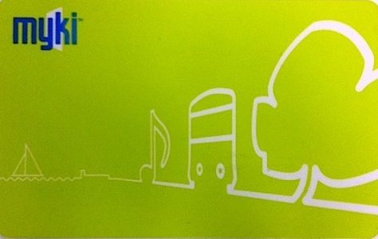

| Myki is your travel card for any train, bus or tram. It is a plastic smartcard which can be topped up and re-used again. Purchase your myki online at the PTV website, premium train stations, retail outlets displaying the myki sign (including 7-Elevens), or by calling 1800 800 007 (free from a land line) in Australia.( www.visitvictoria.com) |  |